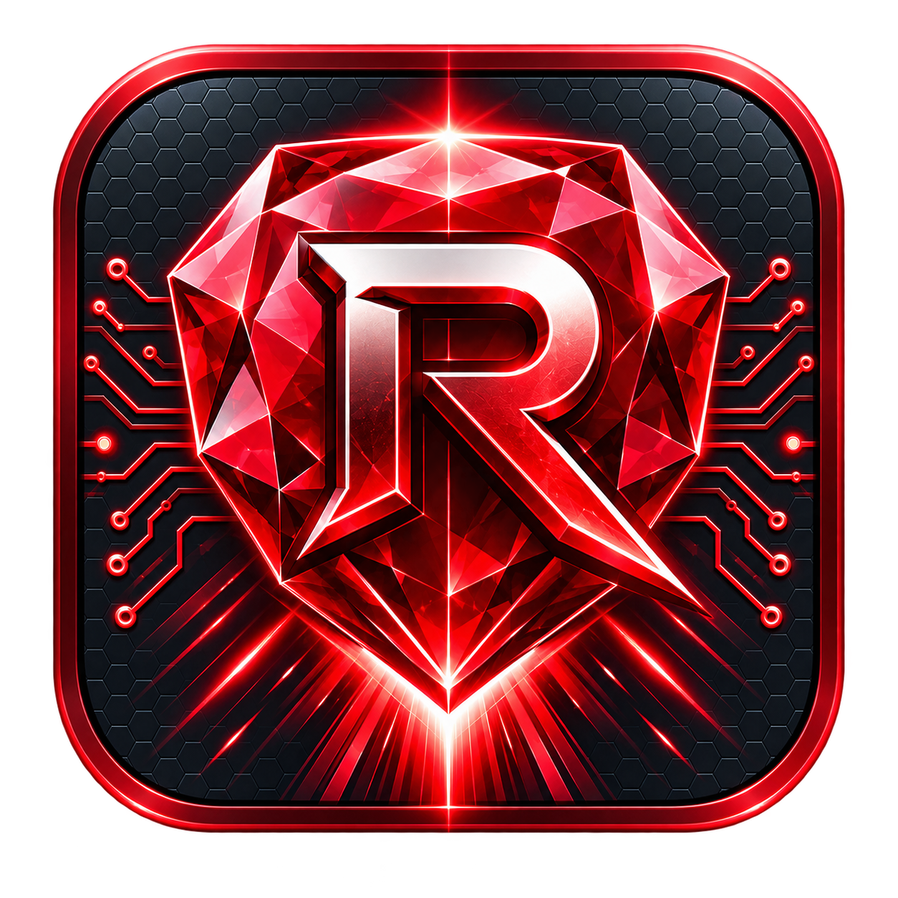

RubyTon Ruby. Sur ton ordinateur.
Ce portail ne reçoit pas tes messages. Le chat s’ouvre sur l’adresse HTTPS privée de l’installation choisie.
Ajouter une installation
Recopie les informations fournies par le PC Ruby. Le code utilisateur est un identifiant, pas un mot de passe. Un nouvel appareil doit être approuvé sur ce PC.
La première connexion nécessite l’adresse HTTPS privée et l’identifiant fournis par ton PC. Le code seul ne permet pas de découvrir une installation sur Internet.
Le PC, Ruby et l’accès privé doivent être disponibles. Aucun Ruby central ne prend le relais. Le carnet reste dans ce navigateur et ne contient aucun jeton.